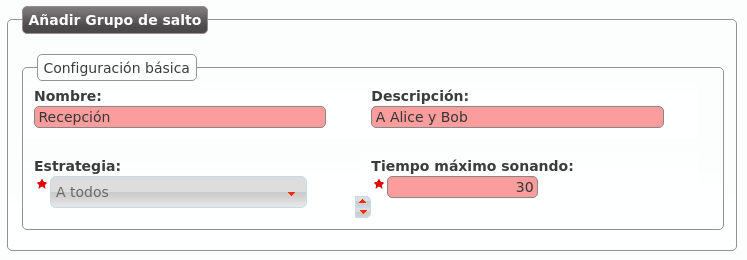

Grupos de salto¶
Los grupos de salto nos permiten definir lógicas de ringado más allá de la básica llamada a usuario.
Existen de varios tipos:
- A todos
La llamada suena en varios terminales a la vez durante el tiempo definido.
- Secuencialmente
Suenan los usuarios definidos, en el orden definido y durante el tiempo definido a cada uno de ellos. Al acabar la secuencia, la llamada se cuelga.
- Secuencialmente (infito)
Suenan los usuarios definidos, en el orden definido y durante el tiempo definido. Al acabar la secuencia, se vuelve a iniciar la secuencia.
- Aleatoriamente
Reparte las llamadas entre los usuarios elegidos de forma aleatoria, sonando cada uno de ellos el tiempo acordado. Una vez que suenan todos, la llamada se cuelga.
Ejemplo 1: Grupo de salto ringall
Creemos por ejemplo un grupo de salto que llame a la par a nuestros 2 usuarios durante 30 segundos:
Pulsando el icono de las personas podemos añadir a Alice y Bob a nuestro grupo de salto:

Ejemplo 2: Grupo de salto secuencial
Editemos ahora este grupo de salto para que llame 10 segundos a Alice y después 15 segundos a Bob, reiniciando la secuencia si ninguno de los 2 contesta:

En este caso tenemos que indicar una prioridad (los usuarios suenan de menos a mayor prioridad) y un tiempo de ringing:
Consejo
Para que ciertas lógicas (desvíos, etc.) alcancen un Grupo de salto, basta con crear una extensión apuntando a dicho grupo de salto y utilizar esta extensión como destino de la lógica.
Creemos la extensión 200 que apunte a este grupo de salto:

Consejo
Al configurar un grupo de salto, puedes evitar que las llamadas generen llamadas perdidas en los miembros con el parámetro Evitar llamadas perdidas:
Sí: las llamadas del grupo de salto no generarán perdidas nunca.
No: El comportamiento dependerá del tipo de grupo de salto:
RingAll: las llamadas generarán perdida solo si no contesta ninguno de los miembros.
Resto de tipos: las llamadas generarán perdida en los miembros que no contesten.